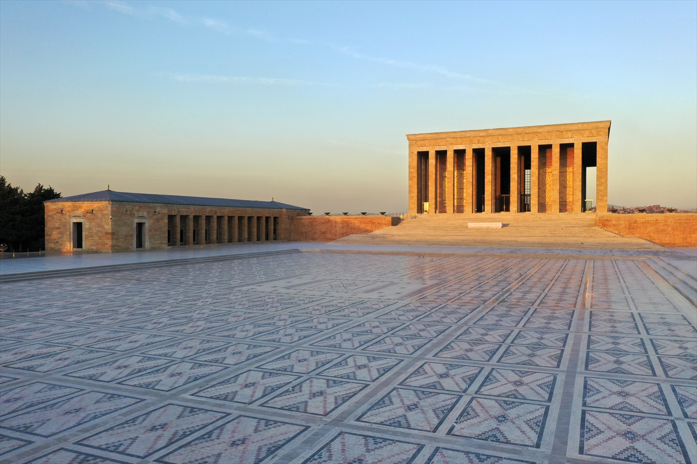

Anıtkabir (Mausoleo de Atatürk)
Anıtkabir ("tumba conmemorativa") es el mausoleo de Mustafa Kemal Atatürk, el líder de la Guerra de Independencia Turca y el fundador y primer presidente de la República de Turquía. Es un símbolo nacional de inmenso respeto para el pueblo turco.
El complejo es una obra maestra de la arquitectura monumental moderna. Incluye el "Camino de los Leones", una gran plaza de ceremonias, y el Salón de Honor, que alberga el sarcófago de Atatürk. El diseño es solemne y grandioso, reflejando la magnitud de su legado.
Bajo el Salón de Honor se encuentra un extenso museo dedicado a Atatürk y a la Guerra de Independencia. El museo exhibe sus pertenencias personales, diarios y una fascinante colección de arte y artefactos que narran el nacimiento de la república moderna.